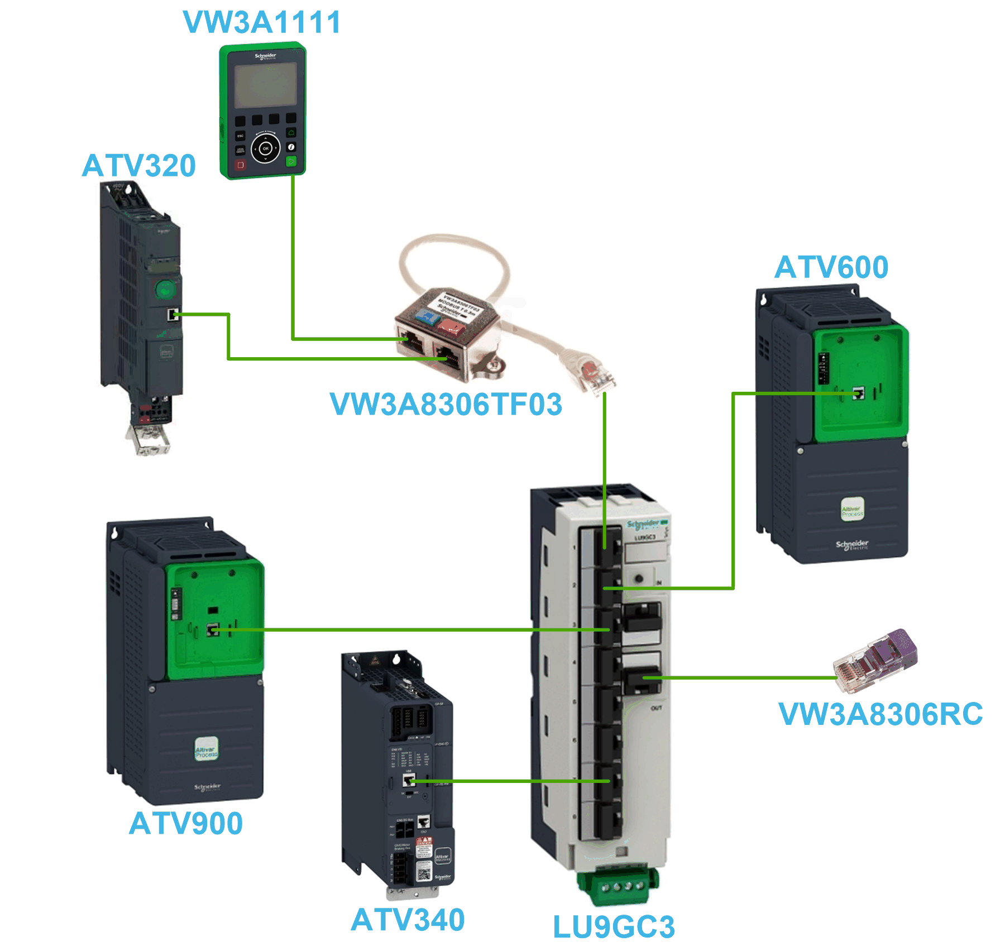
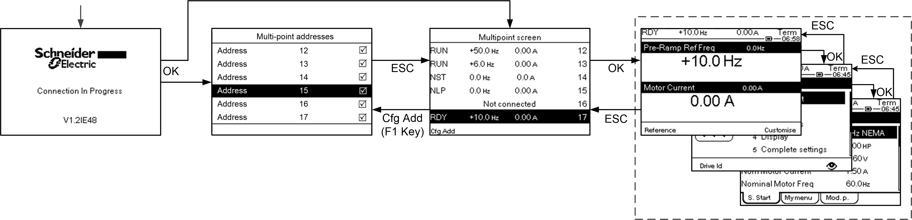

Generally, a Graphic Display Terminal is connected to only one drive. However, communication is possible between a Graphic Display Terminal and several Altivar drives (ATV320, ATV340, ATV600, and ATV900) connected on the same Modbus serial fieldbus via the RJ45 port (HMI or Modbus serial). In such a case, the multipoint mode is automatically applied on the Graphic Display Terminal.
The multipoint mode allows you to:
Have an overview of all the drives connected on the fieldbus (drive state and two selected parameters).
Access to all the menus of each drive connected on the fieldbus.
Command a stop on all the connected drives with the STOP/RESET key (irrespective of the present screen displayed). The type of stop can be individually configured on each drive with the parameter [Stop Key Enable] PST in the menu [Command and Reference] CRP– .
Apart the Stop function linked to the STOP/RESET key, the multipoint mode does not allow to apply a Fault Reset and command the drive via the Graphic Display Terminal: in multipoint mode, the Run key and the Local/Remote key are deactivated.
To use the multipoint mode:
The Graphic Display Terminal software version must be equal to or higher than V2.0.
For each drive, the command channel and the reference channel must be set in advance to a value different from [HMI] LCC .
The address of each drive must be configured in advance to different values by setting the parameter [Modbus Address] ADD in the [Modbus Fieldbus] MD1– .
If the connection to the drive is done via the HMI RJ45 port, the parameter settings in [Modbus HMI] MD2– must be compliant with the Graphic Display Terminal usage .
If the connection to the drive is done via the Modbus serial RJ45 port, the parameter settings in [Modbus Fieldbus] MD1– must be compliant with the Graphic Display Terminal usage .
The following figure gives a topology example using four drives, a Modbus “T” tap-off (VW3A8306TF03) and one Graphic Display Terminal (VW3A1111) linked to one Modbus splitter block (LU9GC3):

The following figure gives the browsing between the different screens linked to the multipoint mode:

On the fieldbus common with the Graphic Display Terminal, if two or more drives are powered on, you access to the [connection in progress] screen. If there is no address selected by the Graphic Display Terminal or no recognized address, the Graphic Display Terminal is locked on this screen. Press OK key to access to the [Multi-point Addresses] screen. Otherwise, if there are addresses-selected and one of them have been recognized by the Graphic Display Terminal, the screen switches automatically to [Multipoint screen].
The [Multi-point Addresses] screen allows to select, by pressing OK key, the addresses of the drives you want to connect with. Up to 32 addresses can be selected (address setting range: 1…247). When all the addresses have been selected, press ESC key to access to the [Multipoint screen].
On the [Multipoint screen], the touch wheel is used to navigate between the drive overviews. Access to the menus of the selected drive by pressing OK key. Return to the [Multipoint screen] by pressing ESC key.
If a drive triggers an error, the Graphic Display Terminal goes automatically to the [Multipoint screen] on the overview of the latest drive who has triggered an error.
The two parameters given in the drive overview can be modified individually on each drive in [Bar Selection] PBS– menu .